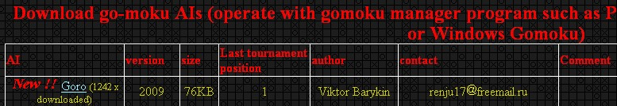

黑石4.0问世 原版作者：维克多·贝尔金
#1 黑石4.0问世 原版作者：维克多·贝尔金 作者：嗯嗯嗯 发表时间：2010-1-10 22:47:24
黑石4.0问世 原版作者：维克多·贝尔金
购买邮箱地址：olegstepanov@mail.ru
［ 有志青年 于 2010-1-23 14:04:13 时奖励此帖[金币加 20 威望加1］
#2 Re:黑石4.0问世 原版作者：维克多·贝尔金 作者：嗯嗯嗯 发表时间：2010-1-23 14:18:21
这么好的宝贝居然没人点击，那个无禁版本的黑石3.9却有那么多人点击，真奇怪，把垃圾堆有那么多人翻，宝藏却无热问津。真奇怪，现在的人是不是都脑子进水了。#3 Re:黑石4.0问世 原版作者：维克多·贝尔金 作者：小丸.net 发表时间：2010-1-23 14:33:52
弱弱的问一下，购买的俄文邮件怎么写？#4 Re:黑石4.0问世 原版作者：维克多·贝尔金 作者：aabb 发表时间：2010-1-23 15:02:46
等饼。。
#5 Re:黑石4.0问世 原版作者：维克多·贝尔金 作者：lfzxdh 发表时间：2010-1-23 16:51:03

#6 Re:黑石4.0问世 原版作者：维克多·贝尔金 作者：千羽鹤 发表时间：2010-1-23 17:33:34
因为这个搞不到啊
#7 Re:黑石4.0问世 原版作者：维克多·贝尔金 作者：小帮帮 发表时间：2010-1-23 19:22:36
花钱和不花钱，这点击率，当然不一样了
#8 Re:黑石4.0问世 原版作者：维克多·贝尔金 作者：极地剑客 发表时间：2010-1-23 19:56:17
无图无真相~坐等楼主上PP~#9 Re:黑石4.0问世 原版作者：维克多·贝尔金 作者：白河愁 发表时间：2010-1-23 20:17:42
于是求原版的安装文件，序列号什么的无所谓。有安装文件就可以……#10 Re:黑石4.0问世 原版作者：维克多·贝尔金 作者：嗯嗯嗯 发表时间：2010-1-23 22:33:25
不知道【KOF】明子懂俄文不?只知道11级精通俄文
哦，加贝也懂俄文的.
#11 Re:黑石4.0问世 原版作者：维克多·贝尔金 作者：失落刀 发表时间：2010-1-23 23:26:21
看不懂外语，售价多少？请问。#12 Re:黑石4.0问世 原版作者：维克多·贝尔金 作者：极地剑客 发表时间：2010-1-23 23:32:38
那个网站其实几百年没更新了吧~世界无禁软件程序比赛有作者最新em，前几天写信还回过~
4.0的事情你可以亲自联系证实一下。有没有这个版本还是个问题咧.坐等楼主真相。。。。
［此帖子已被 极地剑客 在 2010-1-23 23:34:24 编辑过］
#13 Re:黑石4.0问世 原版作者：维克多·贝尔金 作者：忧郁的双眼 发表时间：2010-1-23 23:43:23
黑石方面当然得问我们老大极地贱客啦！！！#14 Re:黑石4.0问世 原版作者：维克多·贝尔金 作者：极地剑客 发表时间：2010-1-23 23:46:33
楼上忽悠大家，我等眼睛雪亮的群众不要被无耻地毒毒利用了~#15 Re:黑石4.0问世 原版作者：维克多·贝尔金 作者：流浪者的梦 发表时间：2010-1-26 9:13:32
期待破解版的面试~［此帖子已被 流浪者的梦 在 2010-1-26 9:14:56 编辑过］
#16 Re:Re:黑石4.0问世 原版作者：维克多·贝尔金 作者：西南偏南 发表时间：2010-4-27 20:44:16
引用：郁闷中
原文由 嗯嗯嗯 发表于 2010-1-23 14:18:21 :
这么好的宝贝居然没人点击，那个无禁版本的黑石3.9却有那么多人点击，真奇怪，把垃圾堆有那么多人翻，宝藏却无热问津。真奇怪，现在的人是不是都脑子进水了。
#17 Re:Re:黑石4.0问世 原版作者：维克多·贝尔金 作者：叶昀 发表时间：2010-4-29 2:30:59
引用：支持小眼，PS一下贱客
原文由 忧郁的双 发表于 2010-1-23 23:43:23 :
黑石方面当然得问我们老大极地啦！！！
#18 Re:黑石4.0问世 原版作者：维克多·贝尔金 作者：孙健 发表时间：2010-7-5 18:43:54
这个软件要付费吗
#19 Re:黑石4.0问世 原版作者：维克多·贝尔金 作者：九月天空 发表时间：2010-7-16 19:55:02
去，（*-*)#20 Re:黑石4.0问世 原版作者：维克多·贝尔金 作者：极地剑客 发表时间：2010-11-22 10:10:10
求40程序~~~~~~#21 Re:黑石4.0问世 原版作者：维克多·贝尔金 作者：飞飞 发表时间：2010-11-23 15:45:54
3.0已经很强悍的说。。。#22 Re:黑石4.0问世 原版作者：维克多·贝尔金 作者：雪儿飘飘 发表时间：2010-11-23 17:11:41
我的电脑只好用3,7还可以勉强打开4.0嘛，下载不来的的。#23 Re:黑石4.0问世 原版作者：维克多·贝尔金 作者：灯塔连珠 发表时间：2011-2-5 21:44:14
听说好多人都有4.0了，不知道是不是真的，不过还是少数人有#24 Re:黑石4.0问世 原版作者：维克多·贝尔金 作者：灯塔连珠 发表时间：2011-2-5 23:23:32
听说黑石最新版本都到了5.08版本了，那个黑石4.0可以控制选点数量，这些都是道听途说，不知道那位高人给点指点呀~~~~有志青年大哥你知道吗？谁给个回答呀？#25 Re:Re:黑石4.0问世 原版作者：维克多·贝尔金 作者：极地剑客 发表时间：2011-2-6 4:19:05
引用：无图无真相
原文由 灯塔连珠 发表于 2011-2-5 23:23:32 :
听说黑石最新版本都到了5.08版本了，那个黑石4.0可以控制选点数量，这些都是道听途说，不知道那位高人给点指点呀~~~~有志青年大哥你知道吗？谁给个回答呀？
#26 Re:黑石4.0问世 原版作者：维克多·贝尔金 作者：遥之来者无界 发表时间：2011-2-6 14:57:58
http://nosovsky.narod.ru/index13.html
为什么下载不下来说
#27 Re:Re:黑石4.0问世 原版作者：维克多·贝尔金 作者：极地剑客 发表时间：2011-2-6 14:59:43
引用：
原文由 遥之来者无界 发表于 2011-2-6 14:57:58 :http://nosovsky.narod.ru/index13.html
为什么下载不下来说
早就下不了了~不过下了也没啥用~是382的~